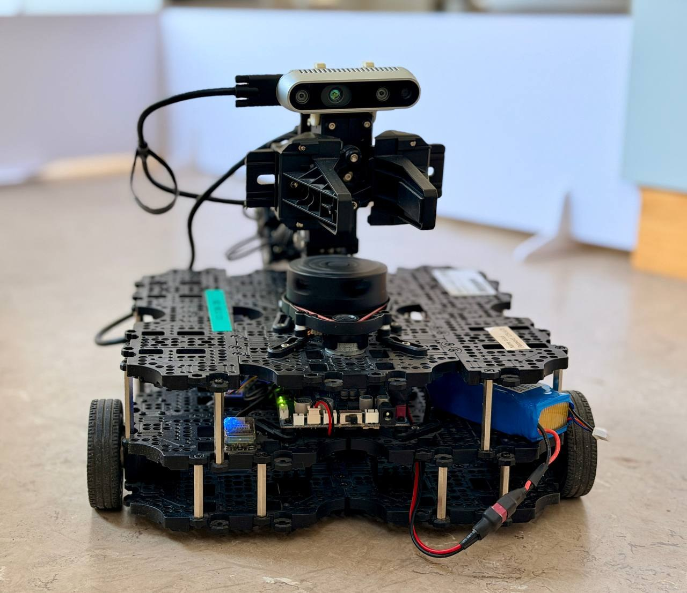
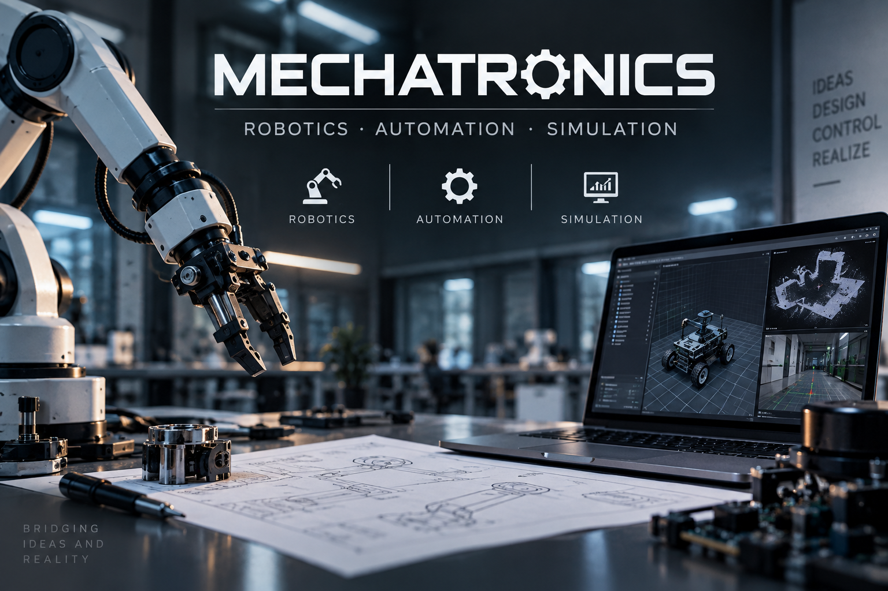
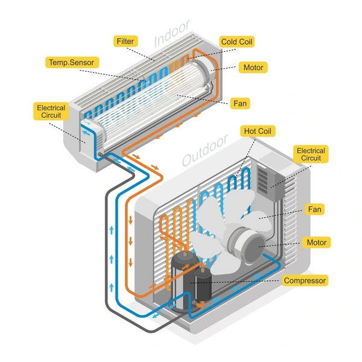
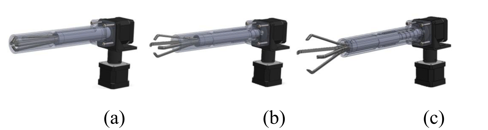

ROS 2 · NAV2 · SLAM · RRTAutonomous Navigation & Maze Exploration with TurtleBot3
Team project combining SLAM, frontier exploration, RRT planning, Nav2 and real-robot testing.
View case study →MECHATRONICS ENGINEER
Engineering ideas into simulations, prototypes and real-world systems.
View Projects
ABOUT
I am a Mechatronics Engineer with a multidisciplinary background in robotics, automation, control, simulation and manufacturing. My work combines hands-on industrial experience with engineering projects developed through my studies, covering areas such as autonomous mobile robots, CAD and FEA, control systems, computer vision, additive manufacturing and factory planning. I enjoy working across the full engineering process — from understanding a technical problem and developing a solution to simulating, testing and improving the final system.
SELECTED PROJECTS

ROS 2 · NAV2 · SLAM · RRTTeam project combining SLAM, frontier exploration, RRT planning, Nav2 and real-robot testing.
View case study →
MATLAB · SIMULINK · CONTROLFeedback-control simulation using temperature and pressure sensing to improve energy efficiency.
View case study →
SOLIDWORKS · FEA · DfAM · FDMTeam project covering compliant mechanism design, CAD, FEA, topology optimization, additive manufacturing and prototype testing.
View case study →MORE PROJECTS
EXPERIENCE
Part-time technical work alongside Master's studies.
Alongside my Master's studies, I work part-time as a technical technician in Regensburg, supporting hands-on technical work and day-to-day engineering operations.
Engineering · Manufacturing · Product Engineering
Engineering Supervisor · Production Launch · Machinery Commissioning
Engineering Consultant · Product & Production Systems
SKILLS & TECHNOLOGIES
PATENT
An engineering concept developed to enable patient transfer without moving the patient.
CONTACT